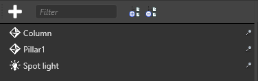
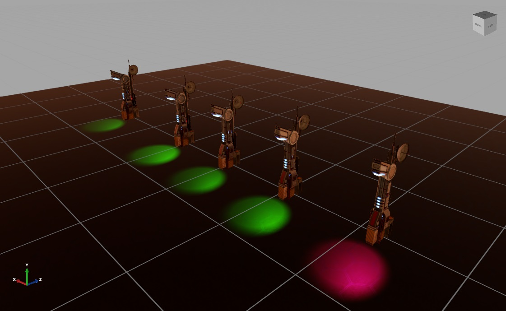

プレハブ プロパティのオーバーライド
中級 プログラマー デザイナー
プレハブのインスタンスでプロパティを変更した場合、そのインスタンスはプレハブからそのプロパティに対する変更を継承しなくなります。これはオーバーライドと呼ばれます。

次のビデオで、Lamp プレハブには、Boxes の親に属する複数の箱エンティティが含まれます。インスタンスから箱を削除すると、そのインスタンスのみが影響を受けます。右側に表示されているプレハブは変更されません。
プレハブで Boxes の親に別の箱を追加しても、オーバーライドされたインスタンスには表示されません。これは、Boxes の親をインスタンスから削除したためです。
オーバーライドされたプロパティを表示する
［Property grid］では、プレハブのインスタンスのどのプロパティが、プレハブの元の値と異なるかを確認できます。
オーバーライドされた固有のプロパティは白と太字で表示されます。
同じプロパティはグレーで表示されます。

プロパティをプレハブの値にリセットする
オーバーライドされたプロパティを親プレハブの値にリセットするには、プロパティを右クリックして［Reset to base value］をクリックします。
例
この例では、未来風の街灯柱のプレハブを使用します。
この街灯柱プレハブは、主柱、支柱、スポット ライトの 3 つのエンティティで構成されます。これらは、プレハブ エディターのエンティティ ツリーに一覧表示されます。

街灯柱プレハブの 5 つのインスタンスをシーンに追加してみましょう。

そして、インスタンスの 1 つを変更します。シーン エディターで、1 つのスポット ライト エンティティを選択し、スポット ライト コンポーネントのプロパティで、色を赤に変更します。［Properties grid］に、変更された［Color］プロパティが太字の白で表示されます。これは、そのプロパティがプレハブのプロパティをオーバーライドしていることを意味します。

これを［Scene view］で確認できます。
次に、プレハブ エディターに戻ってプレハブのスポット ライトの色を緑に変更するとどうなるか見てみましょう。
街灯柱のうち 4 つは緑のライトになります。オーバーライドされたプロパティはプレハブを変更しても変わらないので、5 番目は赤のままです。
